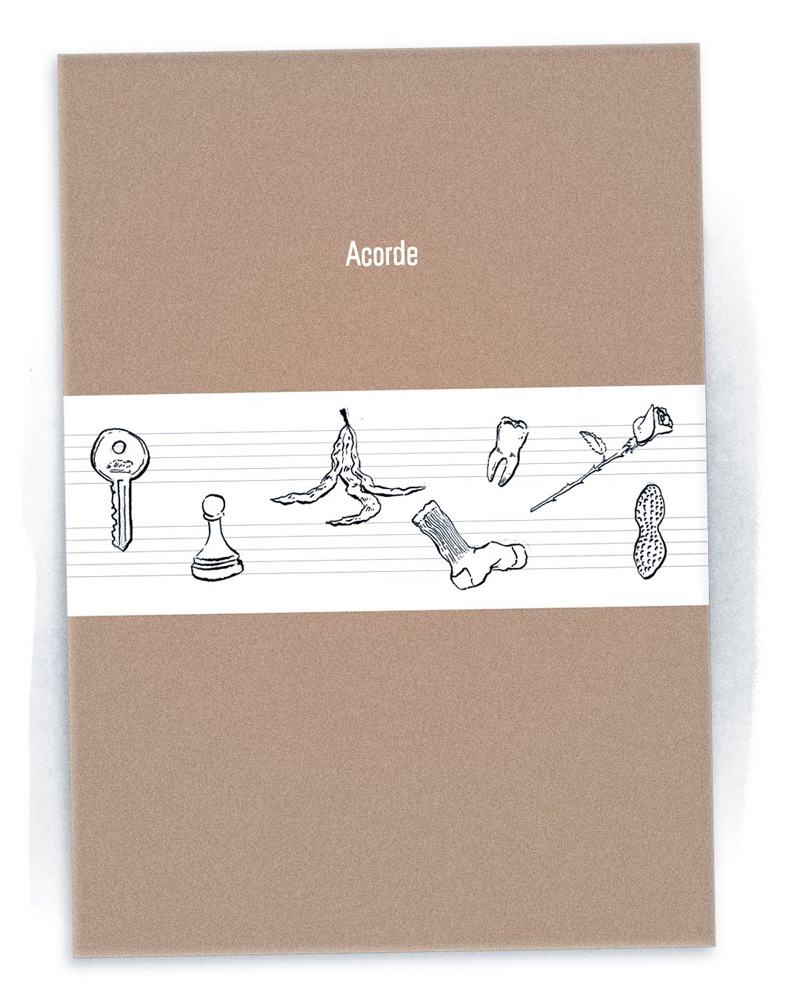
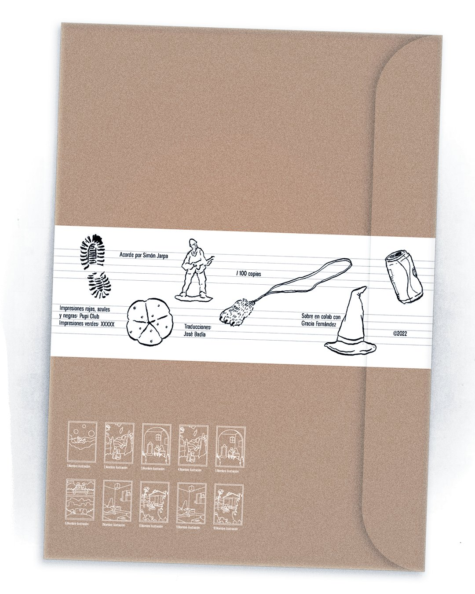
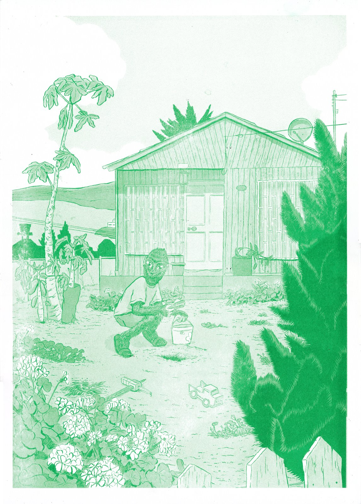
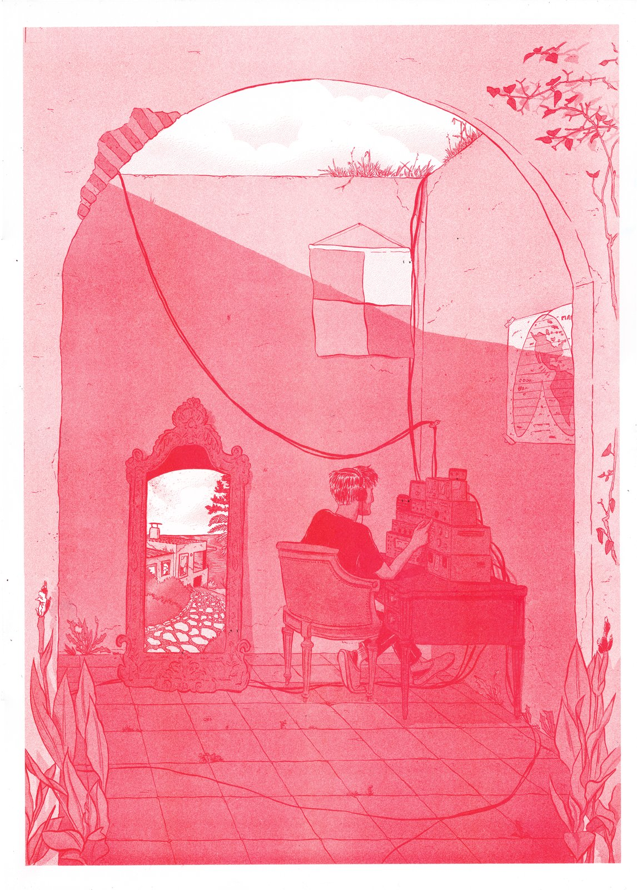
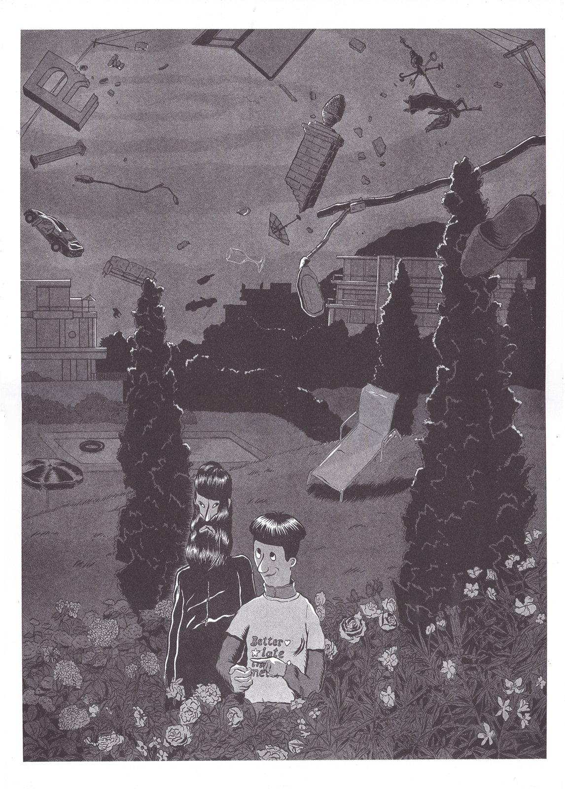
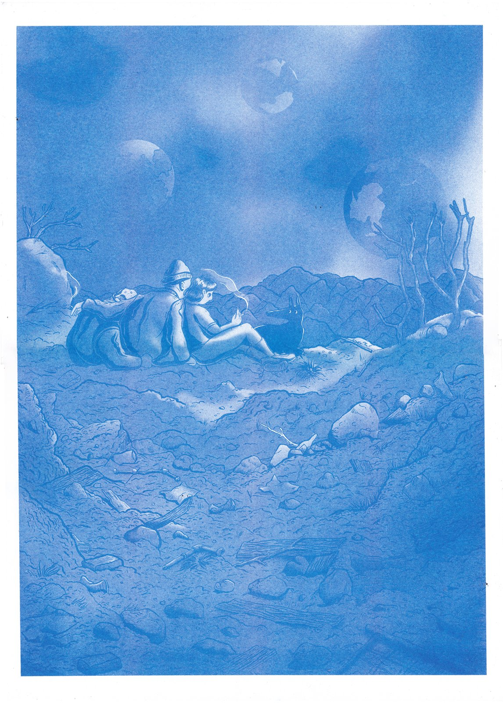
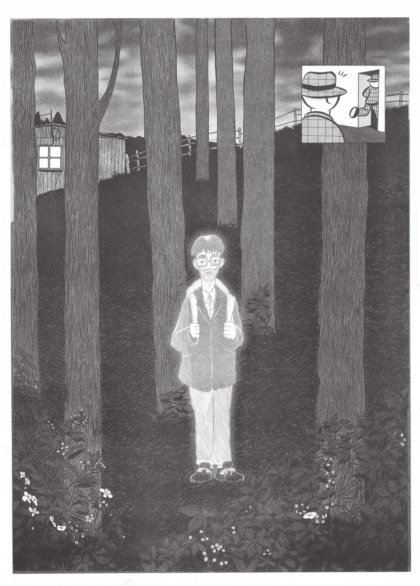
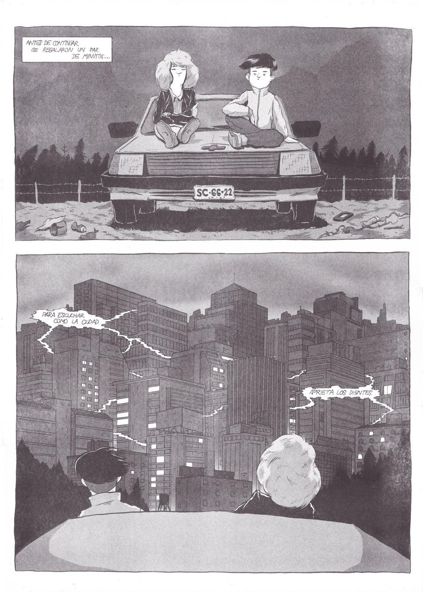
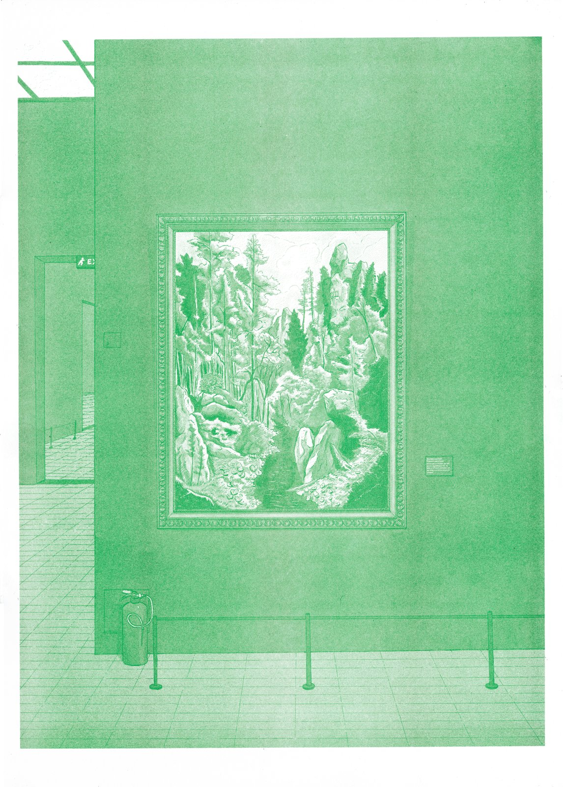
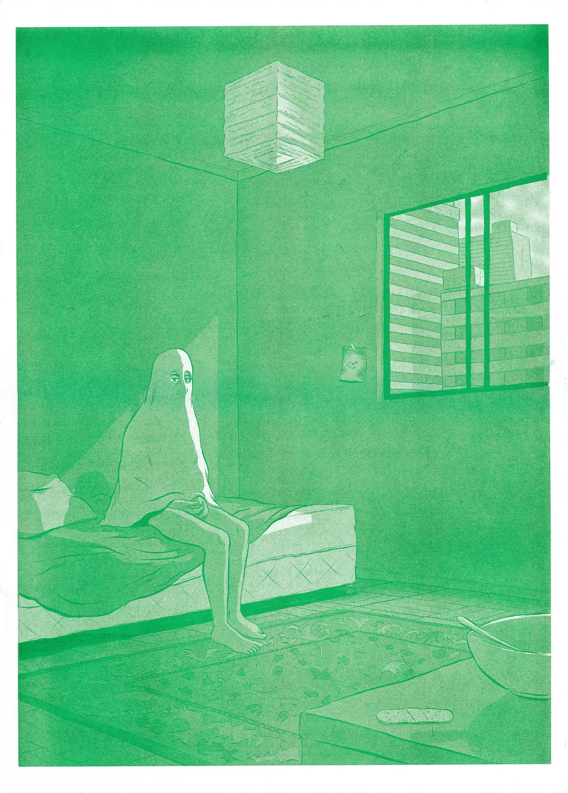

Acorde










Acorde is an exercise in non-linear science fiction composed of ten risographs illustrations and a group of recollected and original writings. The first edition has a total of one hundred signed and numbered copies.